Mon calendrier rentrée, examens, vacances, jours fériés
Mes paiements solde, versements, reçus, historique
Mes demandes documents et messages à l'administration
Ma planification des cours et des examens séances, Teams, dates d'examens
Mes supports & Enregistrements Teams cours en replay et supports
Mes absences synthèse, détail, taux par module
Mes notes relevés synthétique et détaillé
Guide d'utilisation votre brochure personnalisée
Utiliser ECOGEST sur téléphone menu ☰
Questions fréquentes et à qui s'adresser
Comment lire ce guide
Chaque opération est décrite en étapes numérotées (cercles bleus). Sur les captures d'écran, les 12 orange
indiquent l'endroit exact où cliquer ou saisir : ils correspondent aux légendes placées sous chaque image.
Les noms des boutons et des menus sont écrits comme ceci.
Les captures de ce guide ont été réalisées avec le compte de démonstration SALIM SALMI et des données
fictives (notes, absences, paiements, demandes, enseignants). Votre écran affichera vos propres informations, mais la présentation et
les opérations sont strictement identiques.
1. Présentation d'ECOGEST
ECOGEST est l'application de gestion de l'École Supérieure de Rabat. Votre espace étudiant rassemble, au même endroit,
toutes les informations qui vous concernent, mises à jour en temps réel par l'administration et vos enseignants.
Menu
Ce que vous y trouvez
🗓️ Mon calendrier
Les dates importantes de l'année : rentrée, contrôles, examens, vacances, jours fériés, réunions.
💰 Mes paiements
Votre situation financière : total à payer, montant réglé, reste à payer, détail de chaque versement et impression des reçus.
📨 Mes demandes
Demander une attestation ou un relevé, écrire à l'administration et suivre les réponses.
📅 Ma planification des cours et des examens
Votre emploi du temps semaine par semaine, les liens Teams des cours à distance et les dates de contrôle continu et d'examen.
📎 Mes supports & Enregistrements Teams
Les enregistrements des cours (replay) et les supports de cours de chacun de vos modules.
✅ Mes absences
Vos absences, séance par séance, et votre taux d'absence par module.
📊 Mes notes
Toutes vos évaluations et vos relevés de notes par semestre.
📖 Guide d'utilisation
Votre brochure personnalisée, avec vos paramètres de connexion.
Ce dont vous avez besoin
Votre adresse e-mail scolaire (se terminant par @esrmi.ma) et son mot de passe, remis par l'administration à votre inscription.
Un ordinateur, une tablette ou un téléphone avec un navigateur récent (Microsoft Edge, Google Chrome, Safari ou Firefox).
Une connexion Internet. Aucune installation n'est nécessaire.
Vos données sont personnelles
Votre espace n'affiche que vos informations : personne d'autre ne voit vos notes, vos absences ou vos paiements depuis un compte étudiant.
Ne communiquez jamais votre mot de passe, et déconnectez-vous toujours sur un ordinateur partagé.
2. Se connecter et se déconnecter
2.1Se connecter
Ouvrez votre navigateur et saisissez l'adresse d'ECOGEST communiquée par l'école : esrmi.github.io/ecogest/ECOGEST.html.
Nous vous conseillons de l'ajouter à vos favoris.
La page d'accueil présente quatre espaces. Repérez la carte orange Étudiants1.
Cliquez sur son bouton Se connecter.
La fenêtre de connexion Microsoft s'ouvre. Saisissez votre adresse @esrmi.ma, cliquez sur Suivant,
puis saisissez votre mot de passe et cliquez sur Se connecter.
Si Microsoft vous demande « Rester connecté ? », répondez Oui sur votre appareil personnel,
Non sur un ordinateur partagé.
Votre espace étudiant s'affiche : la première page est Mon calendrier.
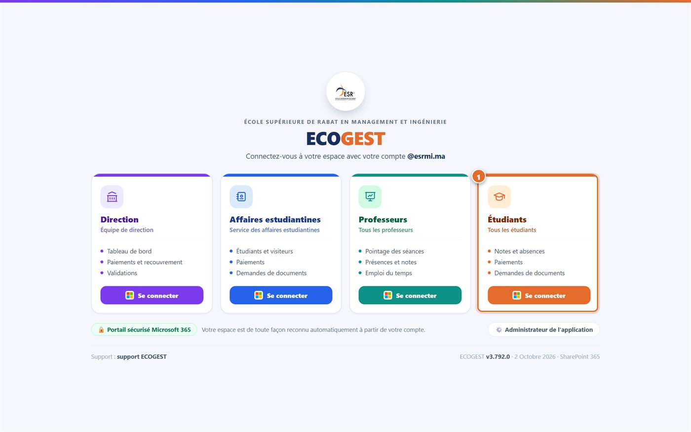
Page d'accueil.1 Carte « Étudiants » et son bouton « Se connecter ».
Première connexion
Lors de votre toute première connexion, Microsoft peut vous demander de remplacer votre mot de passe provisoire par un mot de passe
personnel, puis d'ajouter une méthode de vérification (numéro de téléphone ou application Microsoft Authenticator). Suivez simplement
les écrans proposés. Votre nouveau mot de passe est le même pour ECOGEST, Teams et votre messagerie @esrmi.ma.
Bon à savoir
Votre espace est reconnu automatiquement à partir de votre compte : même si vous cliquez sur une autre carte, vous arrivez dans l'espace étudiant.
Si la page reste blanche ou ne se met pas à jour, actualisez-la (touche F5 sur ordinateur).
Votre session reste ouverte tant que l'onglet est ouvert ; elle se prolonge automatiquement.
2.2Se déconnecter
Cliquez sur le bouton Déconnexion, tout en bas du menu de gauche (ou sur l'icône de sortie ⟶ de votre carte de profil).
Vous revenez à la page d'accueil. Sur un ordinateur partagé, fermez aussi la fenêtre du navigateur.
3. Découvrir l'interface
L'écran est divisé en deux parties : le menu à gauche, toujours visible, et la page ouverte à droite.
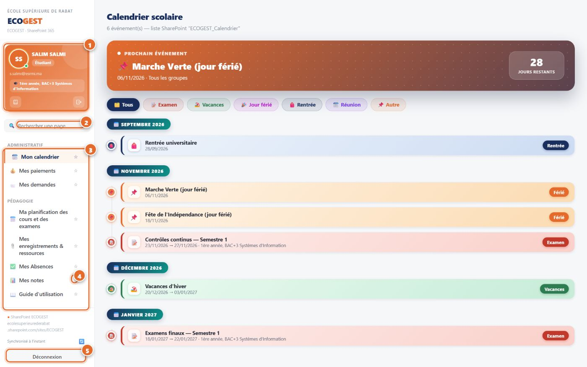
Les éléments de l'interface.
1
Votre carte de profil : nom, statut « Étudiant », adresse e-mail et groupe. Les deux petits boutons du bas ouvrent le
Guide d'utilisation (à gauche) et vous déconnectent (à droite).
2
Rechercher une page : tapez quelques lettres (par exemple « notes ») pour retrouver et ouvrir un menu instantanément.
3
Le menu, en deux rubriques : Administratif (calendrier, paiements, demandes) et Pédagogie
(planification, ressources, absences, notes, guide). Le menu ouvert est surligné.
4
L'étoile ☆ épingle un menu dans vos Favoris, affichés sous forme de boutons ronds en haut du menu.
Cliquez à nouveau sur l'étoile pour le retirer. Astuce : épinglez les menus que vous consultez le plus (par exemple Ma planification et Mes notes).
5
Déconnexion. Juste au-dessus, l'indicateur de synchronisation et le bouton 🔄 qui recharge immédiatement vos données.
3.1Ajouter une photo de profil
Placez la souris sur le cercle de vos initiales, dans votre carte de profil : une petite icône 📷 apparaît.
Cliquez sur le cercle (Ajouter une photo), puis choisissez une photo sur votre appareil.
La photo remplace vos initiales et est conservée pour vos prochaines connexions.
4. Mon calendrier
Le calendrier scolaire regroupe tous les événements de l'année qui vous concernent : ceux de toute l'école et ceux de votre groupe.
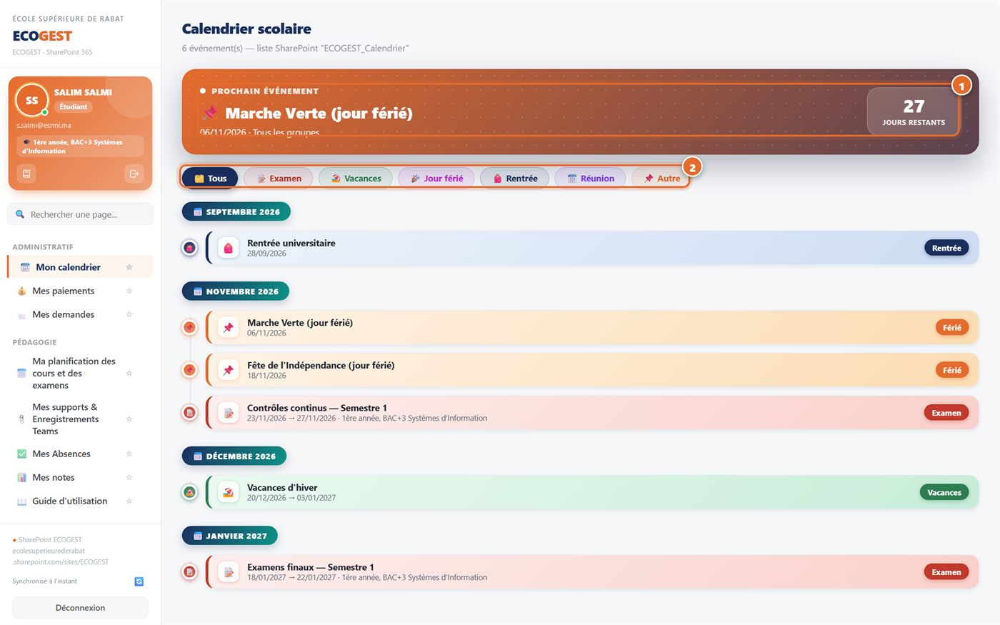
Mon calendrier.1 Prochain événement · 2 Filtres par type.
4.1Consulter le calendrier
Cliquez sur Mon calendrier dans le menu (c'est aussi la page qui s'ouvre à la connexion).
Le bandeau du haut 1 affiche le prochain événement et le nombre de jours restants.
En dessous, les événements sont classés par mois, dans l'ordre chronologique. Chacun indique son titre, sa date (ou sa période)
et, s'il ne concerne qu'un groupe, le nom de ce groupe.
Pour n'afficher qu'un type d'événement, cliquez sur un filtre 2 : Examen,
Vacances, Jour férié, Rentrée, Réunion
ou Autre. Cliquez sur Tous pour tout réafficher.
Bon à savoirLes couleurs vous aident à repérer les événements d'un coup d'œil : rouge pour les examens, vert pour les vacances,
orange pour les jours fériés, bleu pour la rentrée. Le calendrier est mis à jour par l'administration : consultez-le régulièrement.
5. Mes paiements
Cette page présente votre situation financière pour l'année universitaire choisie. Elle est en lecture seule :
les versements sont enregistrés par le service financier.
5.1Consulter votre solde
Cliquez sur Mes paiements.
Vérifiez l'année universitaire affichée1 ; changez-la si besoin dans la liste déroulante.
Les données de chaque année sont toujours présentées séparément.
L'onglet 💰 Solde2 affiche cinq indicateurs : Total à payer, Total payé,
Reste à payer, Remises accordées et Taux de paiement, ainsi que vos informations (filière, promotion, responsable financier).
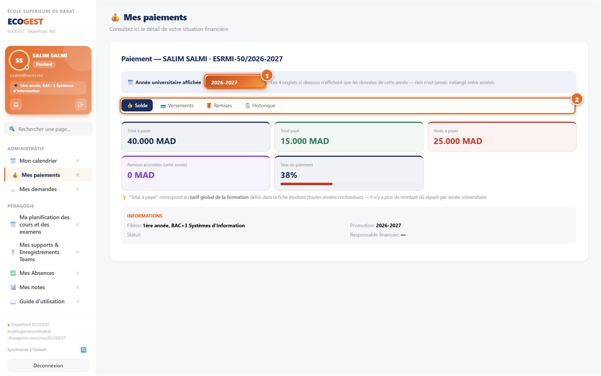
Onglet Solde.1 Année affichée · 2 Les quatre onglets.
5.2Consulter vos versements et imprimer un reçu
Cliquez sur l'onglet 💳 Versements.
Chaque versement apparaît avec son montant, son motif (frais d'inscription, frais de formation…), sa date,
son mode de paiement, sa référence et son numéro de reçu.
Pour obtenir le reçu d'un versement, cliquez sur 🖨️ Reçu1 sur la ligne concernée.
Le reçu s'ouvre au format d'impression : imprimez-le ou choisissez « Enregistrer au format PDF » comme imprimante pour le conserver.
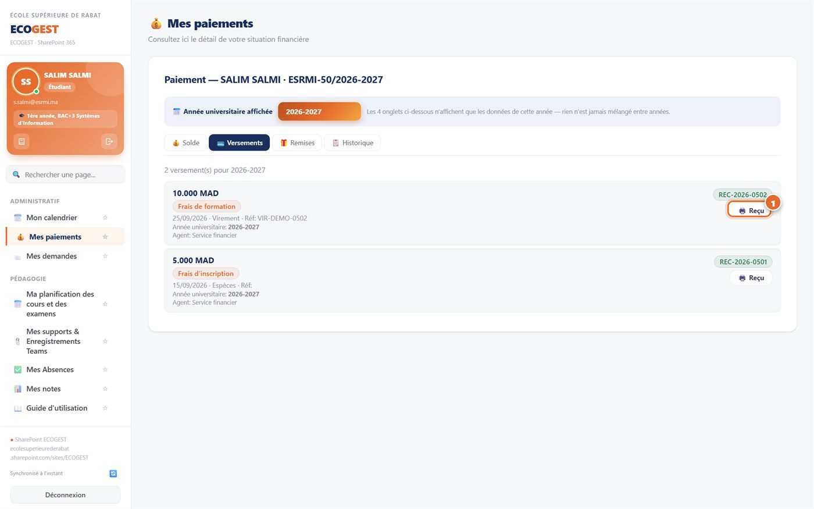
Onglet Versements.1 Bouton d'impression du reçu.
5.3Remises et historique
L'onglet 🎁 Remises liste les éventuelles réductions ou bourses accordées pour l'année.
L'onglet 📋 Historique retrace, dans l'ordre chronologique, toutes les opérations enregistrées sur votre compte.
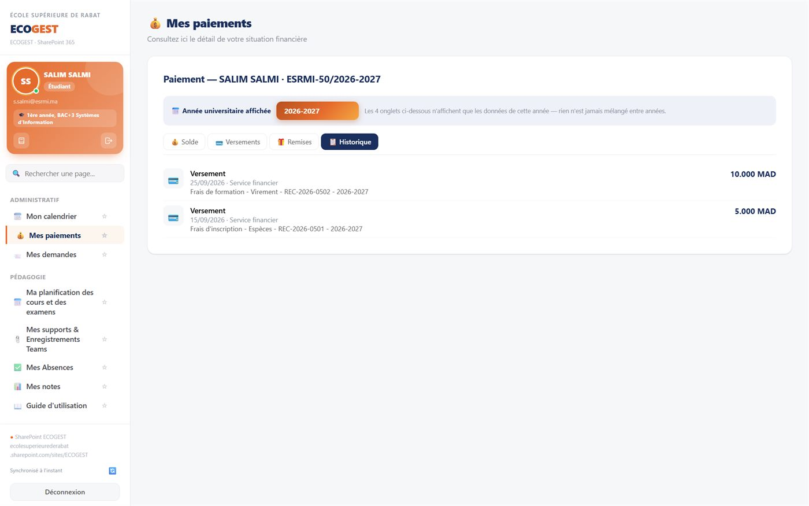
Onglet Historique.
Un montant vous semble incorrect ?
Envoyez un message à l'administration depuis Mes demandes (voir chapitre 6), en précisant la date et le numéro de reçu concernés.
6. Mes demandes
Demandez un document administratif ou écrivez à l'administration, puis suivez l'avancement et les réponses, au même endroit.
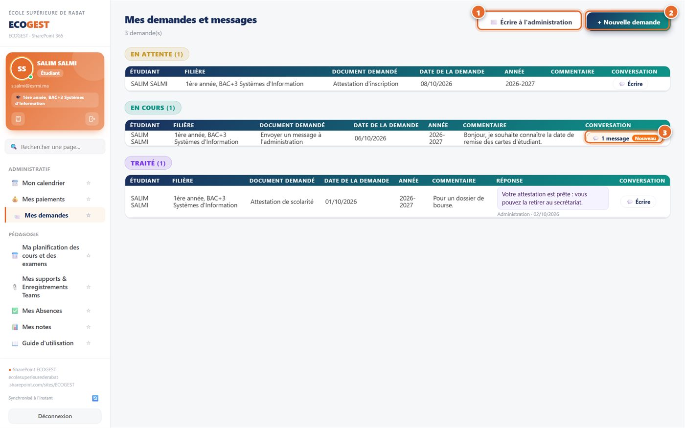
Mes demandes et messages.1 Écrire à l'administration · 2 Nouvelle demande ·
3 Conversation avec un nouveau message.
6.1Demander un document
Cliquez sur Mes demandes, puis sur + Nouvelle demande en haut à droite.
Choisissez l'année universitaire concernée1.
Choisissez le document souhaité2 : attestation d'inscription, attestation de scolarité, attestation de réussite,
relevé de notes ou autre.
Ajoutez si besoin un commentaire3 (par exemple l'organisme destinataire ou le motif).
Cliquez sur Envoyer la demande4. Elle apparaît aussitôt dans la rubrique En attente.
Cliquez sur ✉️ Écrire à l'administration (ou choisissez « Envoyer un message à l'administration », en rouge, dans la liste des documents).
Rédigez votre message 1 : il est obligatoire. L'année universitaire est facultative.
Cliquez sur Envoyer2. L'administration et la direction sont prévenues par e-mail.
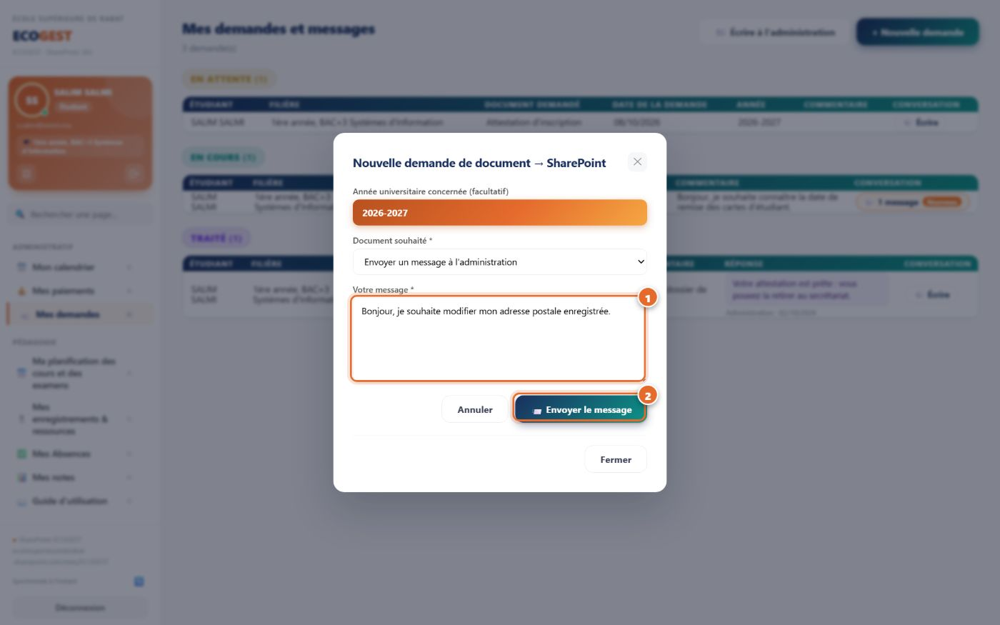
Message à l'administration.1 Votre message · 2 Envoi.
6.3Suivre une demande et répondre
Vos demandes sont classées par statut (voir tableau ci-dessous).
Quand l'administration vous répond, la colonne Conversation affiche 💬 1 message avec le badge Nouveau,
et vous recevez un e-mail sur votre adresse @esrmi.ma.
Cliquez sur ce bouton pour ouvrir la conversation : vos messages sont à droite, ceux de l'administration à gauche.
Pour répondre, écrivez dans la zone de texte 1 puis cliquez sur Envoyer2
(ou appuyez sur Ctrl + Entrée). Vous pouvez aussi ouvrir une conversation sur n'importe quelle demande avec 💬 Écrire.
Lorsqu'une demande est traitée, la réponse de l'administration s'affiche dans la colonne Réponse.
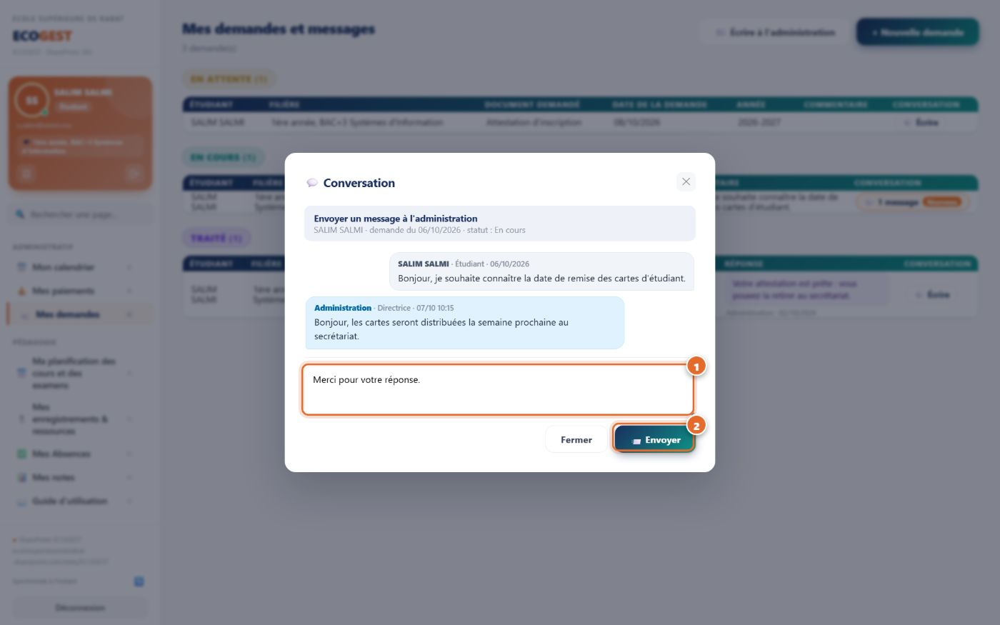
Conversation.1 Votre réponse · 2 Envoi.
Statut
Signification
En attente
Votre demande est enregistrée et n'a pas encore été prise en charge.
En cours
L'administration traite votre demande (ou vous a répondu).
Prête
Le document est prêt : vous pouvez le retirer au secrétariat.
Délivrée
Le document vous a été remis.
Traité
La demande est close ; la réponse de l'administration est affichée.
Rejetée
La demande ne peut pas aboutir ; consultez la réponse ou la conversation pour en connaître la raison.
7. Ma planification des cours et des examens
Retrouvez votre emploi du temps semaine par semaine, rejoignez vos cours à distance et consultez les dates de vos évaluations.
7.1Consulter vos séances de la semaine
Cliquez sur Ma planification des cours et des examens, puis sur la tuile Mes séances (ouverte par défaut).
Choisissez le semestre1.
Choisissez la semaine dans la liste 2, ou passez d'une semaine à l'autre avec les flèches ◀ et
▶. La semaine en cours est affichée à l'ouverture.
La grille présente une colonne par jour et une ligne par demi-heure. Chaque séance indique le module, l'enseignant, l'horaire,
la période du module, le mode (📍 Présentiel avec la salle, ou 💻 À distance) et les dates de CC (contrôle continu) et d'EFM (examen de fin de module).
Pour une lecture plus compacte, les jours et heures sans séance sont masqués : une fine bande hachurée remplace les plages vides.
Cliquez sur ↕ Afficher tous les jours et toutes les heures pour voir la grille complète, puis sur
↕ Masquer les jours et heures sans séance pour revenir à l'affichage compact.
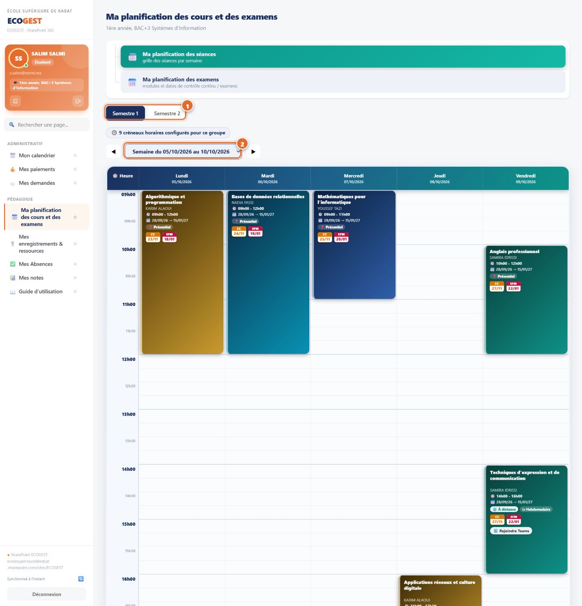
Planification des séances.1 Semestre · 2 Semaine · 3 Rejoindre un cours à distance.
7.2Rejoindre un cours à distance (Teams)
Au moment du cours, repérez la séance marquée 💻 À distance.
Cliquez sur 💻 Rejoindre Teams3.
Teams s'ouvre (application ou navigateur). Connectez-vous avec votre compte @esrmi.ma avant d'entrer dans la réunion :
votre présence est ainsi correctement identifiée.
ImportantRejoignez toujours vos cours avec votre compte scolaire @esrmi.ma, et non comme « invité » ou avec un compte personnel.
7.3Consulter les dates de contrôle continu et d'examen
Cliquez sur la tuile Mes examens.
Choisissez le semestre.
Le tableau donne, pour chaque module, l'enseignant, la date du contrôle continu et celle de l'examen de fin de module,
avec le nombre de jours restants (« Dans 45 j »).
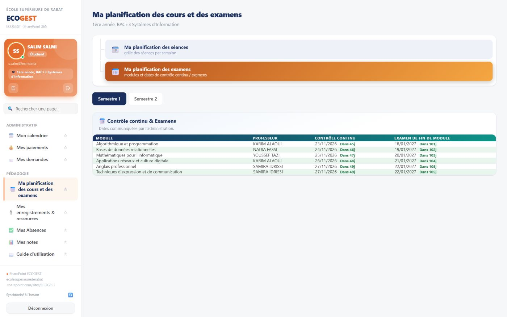
Planification des examens.
8. Mes supports & Enregistrements Teams
Revoyez vos cours enregistrés (« replay ») et téléchargez les supports de cours, module par module.
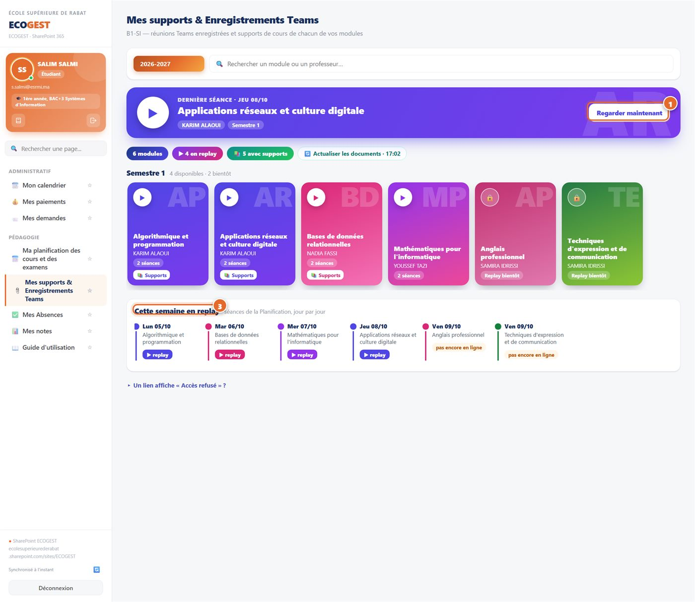
Mes supports & Enregistrements Teams.1 Dernière séance disponible · 2 Carte d'un module · 3 La semaine en replay.
Cliquez sur Mes supports & Enregistrements Teams. Vérifiez l'année universitaire en haut de page.
Le grand bandeau 1 propose la dernière séance enregistrée : cliquez sur Regarder maintenant.
Les cartes 2 regroupent vos modules du semestre. Cliquez sur la partie ▶ d'une carte pour ouvrir les
enregistrements du module, ou sur 📚 Supports pour ouvrir ses supports de cours.
Un cadenas 🔒 « Replay bientôt » signifie que l'enregistrement n'est pas encore disponible.
La section Cette semaine en replay3 liste les séances de la semaine, jour par jour : cliquez sur
▶ replay pour revoir une séance précise.
Si un document vient d'être ajouté, cliquez sur 🔄 Actualiser les documents.
Un lien affiche « Accès refusé » ?
Les enregistrements et supports sont stockés dans l'espace Microsoft 365 de l'école. Assurez-vous d'être connecté au navigateur avec votre
compte @esrmi.ma (et non un compte personnel), puis réessayez. Le lien ▸ Un lien affiche « Accès refusé » ?, en bas de page, rappelle la marche à suivre.
9. Mes absences
Suivez vos absences enregistrées par vos enseignants et votre taux d'absence par module. La page propose trois vues, à choisir en haut de page.
Justifier une absence
Remettez votre justificatif (certificat médical…) à l'administration, ou envoyez un message depuis Mes demandes
en précisant la date, l'horaire et le module. Une fois l'absence justifiée par l'administration, son statut passe à ✓ Justifié.
Surveillez votre taux : au-delà de 25 % d'absence dans un module (seuil officiel de l'établissement), votre situation est signalée.
9.1Synthèse par module
Cliquez sur Mes Absences, puis sur 📚 Synthèse par module.
Filtrez si besoin par année universitaire et par semestre.
Pour chaque module : enseignant, volume horaire, nombre d'absences, heures manquées et taux d'absence.
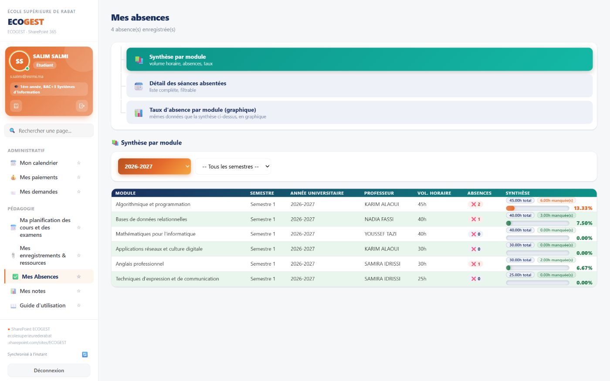
Synthèse par module.
9.2Détail des séances absentées
Cliquez sur 🗓️ Détail des séances absentées.
Utilisez les filtres : semestre, module, enseignant, statut (non justifiées / justifiées) et année.
Chaque ligne indique la date, l'horaire de la séance, le module, l'enseignant et le statut : ⚠️ Non justifiée, ou
✓ Justifié avec la personne qui l'a justifiée et la date.
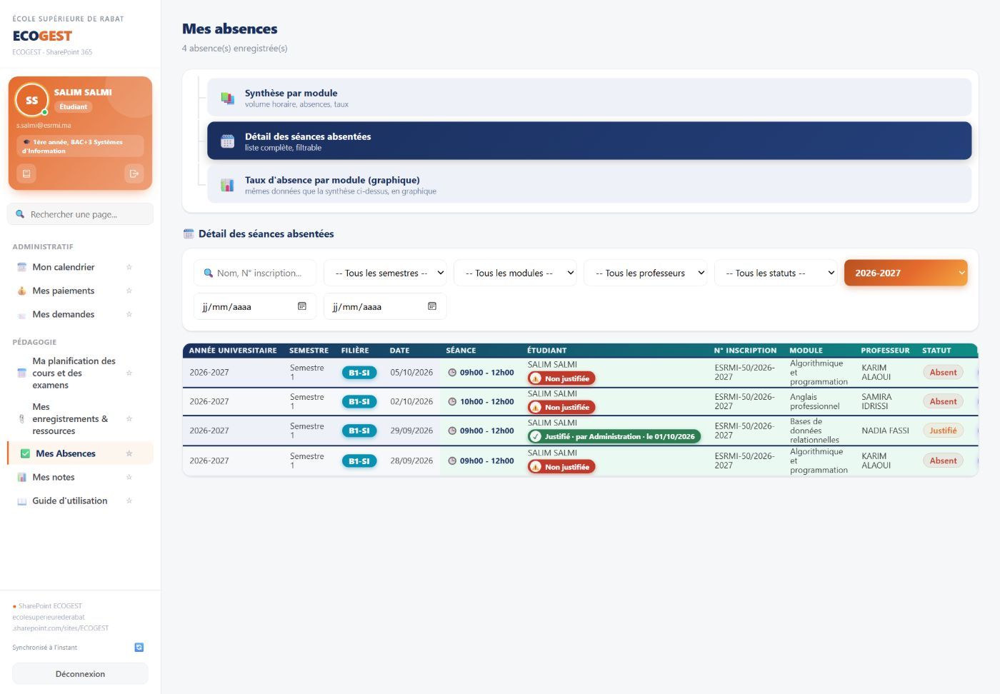
Détail des séances absentées.
9.3Taux d'absence par module (graphique)
Cliquez sur 📊 Taux d'absence par module (graphique), puis choisissez l'année et le semestre.
Le graphique et la liste montrent, pour chaque module, les heures manquées sur le volume total et le pourcentage correspondant.
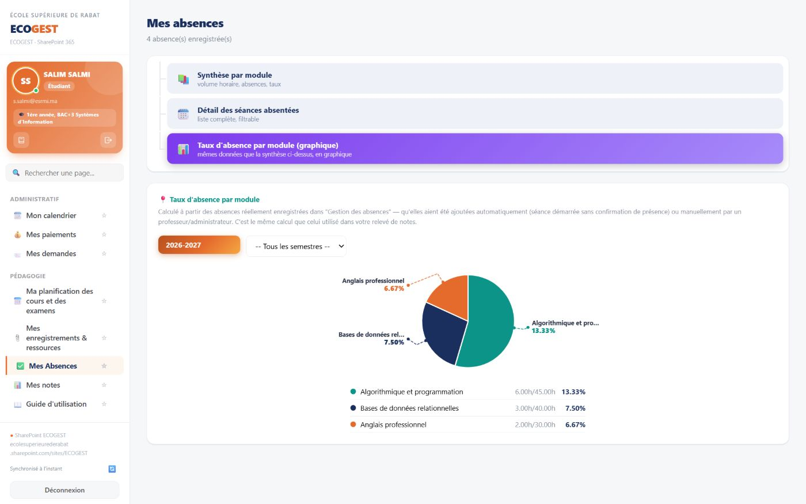
Taux d'absence par module.
10. Mes notes
Consultez vos relevés de notes par semestre et la liste complète de vos évaluations.
Bon à savoir
Une note apparaît dès qu'elle est saisie par l'enseignant ou l'administration.
La note du module et la décision sont calculées automatiquement selon les règles de l'établissement.
Pour obtenir un relevé officiel signé, faites une demande de « Relevé de notes » dans Mes demandes.
Une erreur sur une note ? Écrivez à l'administration depuis Mes demandes en précisant le module et l'évaluation.
10.1Relevé synthétique
Cliquez sur Mes notes, puis sur 📋 Mes relevés de notes (ouvert par défaut).
Choisissez l'année universitaire à côté de « Relevés — Année universitaire ».
Sur la ligne du semestre souhaité, cliquez sur 📋 Voir le relevé synthétique.
Le relevé présente, pour chaque module : la moyenne CC/TP, la note EFM (examen de fin de module), la note du module,
l'éventuelle note de rattrapage et la décision. La moyenne du semestre figure en bas.
Cliquez sur Masquer le relevé synthétique pour le refermer.
Relevé synthétique (données fictives du compte de démonstration).
10.2Relevé détaillé
Cliquez sur 📋 Voir le relevé détaillé.
Toutes les évaluations du semestre s'affichent, de la plus récente à la plus ancienne : date, module, type d'évaluation
(Contrôle continu, Examen de fin de module, Rattrapage) et note sur 20.
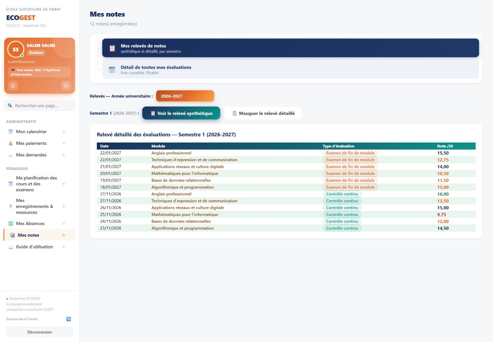
Relevé détaillé des évaluations.
10.3Détail de toutes mes évaluations
Cliquez sur 🗓️ Détail de toutes mes évaluations.
La liste complète de vos notes, toutes années et tous semestres confondus, s'affiche. Utilisez les filtres (recherche, semestre, module, type, année) pour la réduire.
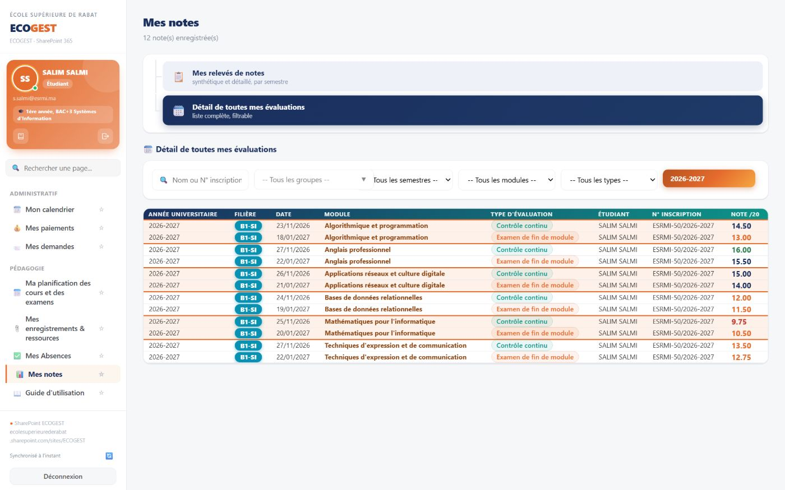
Détail de toutes les évaluations.
11. Guide d'utilisation
Cliquez sur Guide d'utilisation dans le menu, ou sur le petit bouton 📖 de votre carte de profil.
Votre brochure personnalisée s'affiche directement dans la page. Elle reprend vos paramètres de connexion (adresse e-mail et identifiants)
et est générée dans votre navigateur : elle n'est ni envoyée ni stockée ailleurs.
Si elle ne s'affiche pas, cliquez sur le lien « Ouvrez-le dans un nouvel onglet » sous la brochure. Vous pouvez ensuite l'imprimer ou l'enregistrer en PDF.
ConfidentialitéCette brochure contient vos identifiants : ne la partagez pas et ne l'imprimez pas sur un poste public.
12. Utiliser ECOGEST sur téléphone
ECOGEST s'adapte automatiquement aux téléphones et aux tablettes : toutes les opérations de ce guide y sont disponibles.
Ouvrez l'adresse d'ECOGEST dans le navigateur de votre téléphone et connectez-vous comme indiqué au chapitre 2.
Le menu est replié : touchez le bouton ☰ en haut à gauche pour l'ouvrir, puis touchez le menu souhaité.
Le bouton ✕ referme le menu.
Les tableaux s'affichent sous forme de fiches faciles à lire : une fiche par module, par note ou par absence.
Dans Mes séances, la grille affiche un seul jour à la fois, en pleine largeur : choisissez le jour dans la
barre ◀ Lun Mar Mer… ▶ (le nombre de séances est indiqué sous chaque jour ; aujourd'hui est sélectionné à l'ouverture).
Les listes de choix s'ouvrent dans un volet en bas de l'écran : touchez simplement l'option voulue.
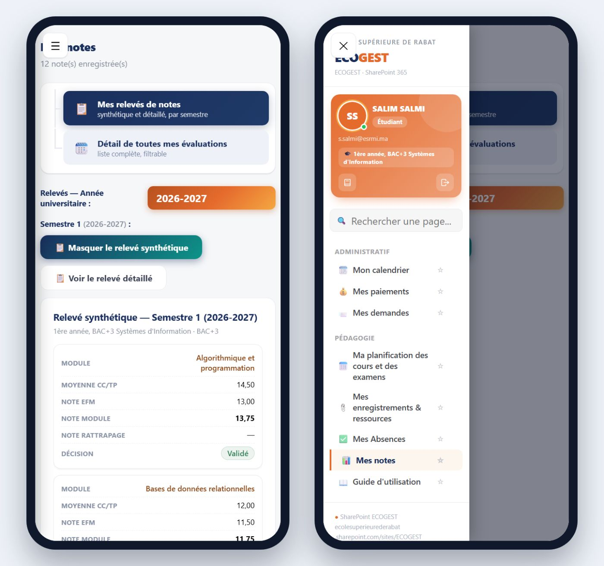
Sur téléphone : à gauche, un relevé de notes en fiches ; à droite, le menu ouvert avec le bouton ☰.
AstuceAjoutez ECOGEST à l'écran d'accueil de votre téléphone (menu du navigateur → « Ajouter à l'écran d'accueil ») pour l'ouvrir comme une application.
13. Questions fréquentes
J'ai oublié mon mot de passe.
Sur la fenêtre de connexion Microsoft, cliquez sur « Mot de passe oublié ? » si l'option est proposée ; sinon, adressez-vous à l'administration,
qui pourra le réinitialiser.
Je vois un message « compte non reconnu » ou une page vide après la connexion.
Vérifiez que vous utilisez bien votre adresse @esrmi.ma. Déconnectez-vous, actualisez la page puis reconnectez-vous. Si le problème persiste,
contactez l'administration : votre fiche étudiant doit être associée à votre adresse.
Une information est erronée (nom, groupe, note, absence, paiement).
Écrivez à l'administration depuis Mes demandes → ✉️ Écrire à l'administration, en donnant le maximum de précisions.
Mes nouvelles notes ou absences n'apparaissent pas.
Cliquez sur le bouton 🔄 en bas du menu (synchronisation) ou actualisez la page. Si l'information manque toujours, elle n'a pas encore été saisie.
Le bouton « Rejoindre Teams » n'ouvre pas le cours.
Vérifiez que Teams est connecté avec votre compte @esrmi.ma. Vous pouvez aussi rejoindre le cours depuis Teams sur le Web (teams.microsoft.com).
Un enregistrement ou un support affiche « Accès refusé ».
Connectez-vous au navigateur avec votre compte @esrmi.ma (et non un compte personnel), puis rouvrez le lien depuis ECOGEST.
Comment obtenir une attestation ou un relevé officiel ?
Faites une demande dans Mes demandes → + Nouvelle demande. Vous serez informé par e-mail et dans ECOGEST
lorsque le document sera prêt.
Puis-je utiliser ECOGEST sur plusieurs appareils ?
Oui : ordinateur, tablette et téléphone. Pensez à vous déconnecter sur les appareils partagés.
Besoin d'aide ?
Pour toute question sur l'utilisation d'ECOGEST, écrivez à l'administration depuis Mes demandes
ou présentez-vous au secrétariat de l'école.
Guide de l'espace étudiant ECOGEST — édition octobre 2026 (version de l'application v3.792).
Les captures d'écran utilisent un compte de démonstration et des données fictives.